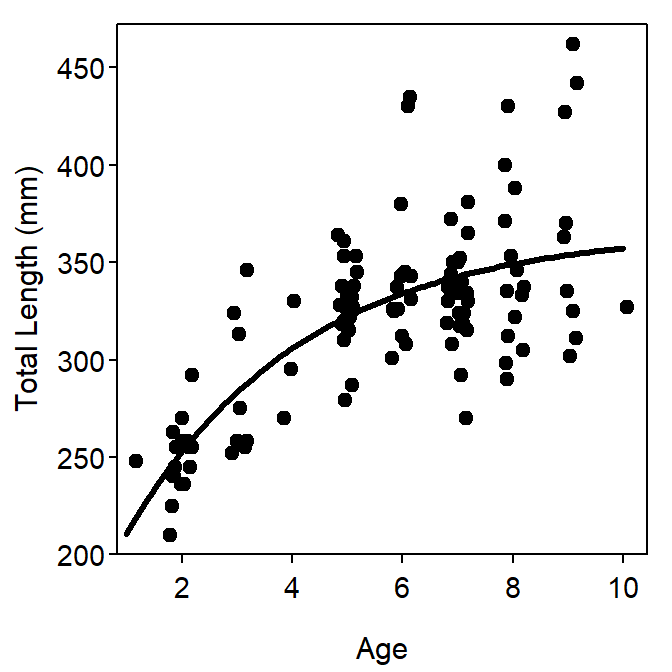
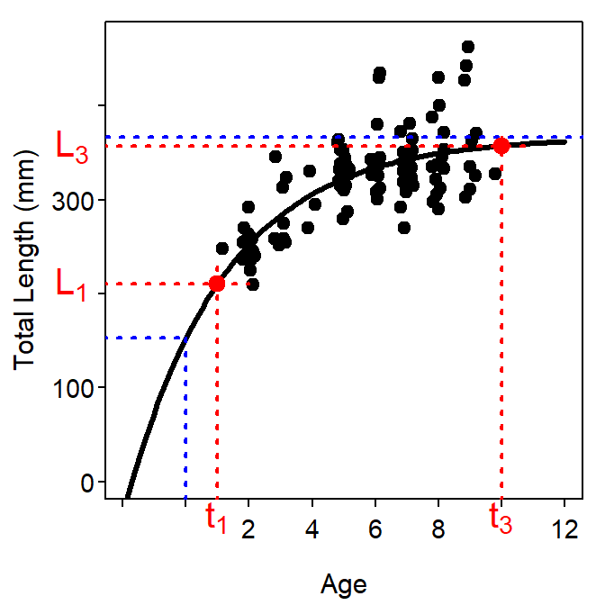
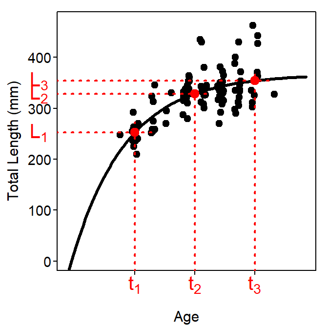
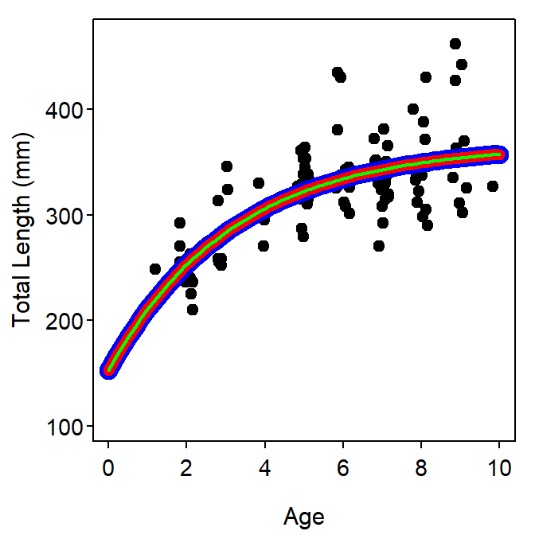

Other Parameterizations of the VBGF
The Models and Their Parameters
A model can often be cast into a different parameterization where the model is functionally the same – i.e., predictions are exactly the same – but it has different parameters. Different parameterizations of models are created for a variety of reasons but two important reasons are that the re-parameterized model (i) has parameters for which the interpretation meets some need and (ii) has parameters that are less correlated. Each parameterization can ultimately be shown to be equivalent via albegra. The VBGF has been cast in at least five different parameterizations, each of which is discussed in this section.
Original Model Parameterization
The VBGF first proposed by von Bertalanffy (Cailliet et al. 2006) is
\[ E[L|t] = L_{\infty} - \left (L_{\infty} - L_{0}\right)e^{-Kt} \quad \quad \text{(3)} \]
where most items are defined as for Equation 1 and \(L_{0}\) is the mean length at time zero (i.e., birth).3 Visualizations for the parameters are shown in Figure 3. This parameterization of the VBGF, despite being the model proposed by von Bertalanffy, has been relatively (as compared to the typical VBGF) rarely used in the literature. However, Cailliet et al. (2006) recommended its use with chondrychthians.

Figure 3: Example of the “original” parameterization of the VBGF fit to size-at-age Atlantic Croaker data. The plot on the left is the fitted model expressed over the observed ages and lengths of the data. The plot on the right is the same fitted model but expressed over a range of ages and lengths that allows for illustrating the meaning of \(L_{\infty}\) and \(L_{0}\).
Gallucci and Quinn (1979) Parameterization
Gallucci and Quinn II (1979) noted that comparisons of “growth” between two groups should involve both \(K\) and \(L_{\infty}\). However, because of the generally high correlation between these two parameters, simultaneous hypothesis tests of these two parameters are compromised and difficult to interpret. To aid comparison between two groups, Gallucci and Quinn II (1979) introduced a new parameter, \(\omega=KL_{\infty}\) which, by solving this quantity for \(L_{\infty}\) and substituting into Equation 1, yields yet another reparameterization of the VBGF,
\[ E[L|t] = \frac{\omega}{K}\left(1-e^{-K(t-t_{0})}\right) \quad \quad \text{(4)} \]
Gallucci and Quinn II (1979) state that \(\omega\) can be thought of as a growth rate because the units are in length-per-time and, in fact, it is representative of the growth rate near \(t_{o}\). Furthermore, they claim that \(\omega\) is the appropriate parameter to use when comparing populations because of its statistical robustness.
Mooij et al. (1999) Parameterization
Mooij et al. (1999) applied the same concept as Gallucci and Quinn II (1979) to Equation 3 rather than Equation 1 to yield the following parameterization,
\[ E[L|t] = L_{\infty}-(L_{\infty}-L_{0})e^{-\frac{\omega}{L_{\infty}}t} \quad \quad \text{(5)} \]
The parameters of this model are interpreted as before with the exception that \(\omega\) is representative of the growth rate near \(L_{0}\).
Schnute Parameterization
All previous parameterizations have two major difficulties – (1) highly correlated parameters and (2) some parameters that are largely extrapolations (the “positions” of \(L_\infty\), \(L_{0}\), and \(t_{0}\) are rarely represented in the data). The VBGF parameterizations shown in this, and the next, section are largely based on “expected values” at known ages and, thus, largely alleviate these difficulties (Ratkowsky 1986). The so-called “Schnute” parameterization (from Quinn II and Deriso (1999)) of the VBGF is,
\[ E[L|t] = L_{1} + (L_{3}-L_{1})\frac{1-e^{-K(t-t_{1})}}{1-e^{-K(t_{3}-t_{1})}} \quad \quad \text{(6)} \]
where \(L_{1}\) is the average length at the youngest age, \(t_{1}\), and \(L_{3}\) is the average length at the oldest age, \(t_{3}\), in the sample.
It is important to note that this parameterization is not more or less parsimonious then any of the previous parameterizations as it still has three parameters – \(L_{1}\), \(L_{3}\), and \(K\) (note that \(t_{1}\) and \(t_{3}\) are constants). However, it does have two major advantages over the previous parameterizations. First, the parameters in this parameterization are less correlated than the parameters in other parameterizations (Gallucci and Quinn II (1979) and see this section) and, thus, more stable. Second, this parameterization is directly comparable to the general growth model developed by Schnute (1981). The major drawback of this parameterization is that comparison to results in the literature or from previous studies is difficult, as the typical parameterization is far more prevalent. Schnute and Fournier (1980) did show, however, that the point estimate of \(L_{\infty}\) and \(t_{0}\) can be obtained from the parameters in the Schnute parameterization as follows,
\[ L_{\infty} = \frac{L_{3}-L_{1}e^{-K(t_{3}-t_{1})}}{1-e^{-K(t_{3}-t_{1})}} \] \[ t_{0} = t_{1} + \frac{1}{K}ln\left(\frac{L_{3}-L_{1}}{L_{3}-L_{1}e^{-K(t_{3}-t_{1})}}\right) \]
A common mistake in the interpretation of the Schnute parameterization is to equate \(L_{2}\) and \(L_{\infty}\). However, \(L_{2} \neq L_{\infty}\) as \(L_{\infty}\) is the average size at the theoretical maximum age and \(L_{2}\) is the average size at the maximum age *in the sample}. Thus, \(L_{2}\leq L_{\infty}\) because the maximum age in the sample is either less than or equal to the theoretical maximum age (Figure 4).

Figure 4: Example of the Schnute parameterization of the VBGF fit to size-at-age Atlantic Croaker data expressed over a range of ages and lengths that allow illustrating the meaning of \(L_{1}\) and \(L_{2}\). In addition, the blue lines correspond to \(L_{\infty}\) from Figure 2 and \(L_{0}\) from Figure 3 for comparative purposes.
Francis (1988) Parameterization
Francis (1988) provided yet another parameterization of the VBGF in his paper comparing the fit of VBGFs to length-at-age data and to tag-recapture data. His basic argument was that the meanings of \(L_{\infty}\) and \(K\) depend on which type of data (and corresponding model) is being fit and that this is an undesirable property. He proposed the following parameterization as a correction to this problem,
\[ E[L|t] = L_{1} + \left(L_{3} - L_{1}\right)\frac{1-r^{2\frac{t-t_{1}}{t_{3}-t_{1}}}}{1-r^2} \quad \quad \text{(8)} \]
where
\[ r = \frac{L_{3}-L_{2}}{L_{2}-L_{1}} \]
where \(L_{1}\), \(L_{2}\), and \(L_{3}\) are the mean lengths at ages \(t_{1}\), \(t_{2}\),and \(t_{3}\), respectivly. The \(t_{1}\) and \(t_{3}\) are arbitrary reference ages (and \(t_{2}\) is half-way between each) but are generally a relatively young (i.e., \(t_{1}\)) and old (i.e., \(t_{3}\)) age. Note that \(r\) is used to simplify the presentation and is not a new parameter. The resultant parameters from this model are effectively the predicted mean lengths-at-age for the three chosen ages (Figure 5).

Figure 5: Example of the Francis parameterization of the VBGF fit to size-at-age Atlantic Croaker data expressed over a range of ages and lengths that allow illustrating the meaning of \(L_{1}\), \(L_{2}\), and \(L_{3}\). Note that the arbitrary ages chosen were \(t_{1}\)=2 and \(t_{3}\)=9.
Francis (1988) showed that point estimates of the typical parameters could be derived from these modified parameters as follows,
\[ L_{\infty} = L_{1} + \frac{L_{3}-L_{1}}{1-r^{2}} \] \[ K = \frac{-2log(r)}{t_{3}-t_{1}} \] \[ t_{0} = t_{1} + \frac{1}{K}log\left(\frac{L_{\infty}-L_{1}}{L_{\infty}}\right) \]
Parameterization Comparisons
As noted previously, the different parameterizations of the VBGF are the same model with different parameters (Figure 6). Estimates of parameters that appear in more than one of the parameterizations will be the same among the parameterizations (Table 2). The parameterizations based on expected values (i.e., Schnute and Francis) will generally require fewer iterations to converge when fitting and will result in lower correlations among parameter estimates (Table 2).
Table 2: Parameter estimates and model results from fitting different parameterizations of the VBGF to the male Atlantic Croaker data. Note that \(L_{1}\), \(L_{2}\), and \(L_{3}\) are not comparable between parmaterizations; \(L_{1}\), \(L_{2}\), and \(L_{3}\) correspond to ages 2, 5.5, and 9 in the Francis parameterization; “iters” is the number of iterations to convergence; and \(r_{max}\) and \(r_{mean}\) are the maximum and average absolute value of correlation coefficients among the three parameters.
| Models | \(L_{0}\) | \(L_{\infty}\) | \(K\) | \(t_{0}\) | \(\omega\) | \(L_{1}\) | \(L_{2}\) | \(L_{3}\) | SE | iters | \(r_{max}\) | \(r_{mean}\) |
|---|---|---|---|---|---|---|---|---|---|---|---|---|
| Typical |
|
366 | 0.31 | -1.71 |
|
|
|
|
33 | 4 | 0.97 | 0.93 |
| Original | 153 | 366 | 0.31 |
|
|
|
|
|
33 | 4 | 0.95 | 0.89 |
| Gallucci Quinn |
|
|
0.31 | -1.71 | 115.3 |
|
|
|
33 | 4 | 1.00 | 0.98 |
| Mooij | 153 | 366 |
|
|
115.3 |
|
|
|
33 | 4 | 0.93 | 0.89 |
| Schnute |
|
|
0.31 |
|
|
210 |
|
357 | 33 | 4 | 0.83 | 0.71 |
| Francis |
|
|
|
|
|
253 | 329 | 354 | 33 | 4 | 0.08 | 0.05 |

Figure 6: Fits of the typical (blue), Schnute (red), and Francis (green) parameterizations of the VBGF to size-at-age Atlantic Croaker data (auto-generated starting values were used for all parameterizations). Note that the results of all fits are identical and, thus, the fitted lines are directly on top of each other. Different colors and different line widths were used to illustrate this point but may not be readily apparent on the screen or printed page.
Reproducibility Information
- Compiled Date: Wed Dec 29 2021
- Compiled Time: 9:03:07 PM
- R Version: R version 4.1.2 (2021-11-01)
- System: Windows, x86_64-w64-mingw32/x64 (64-bit)
- Base Packages: base, datasets, graphics, grDevices, methods, stats, utils
- Required Packages: FSA, FSAdata, captioner, dplyr, knitr, xtable and their dependencies (car, dunn.test, ellipsis, evaluate, generics, glue, graphics, grDevices, highr, lifecycle, lmtest, magrittr, methods, pillar, plotrix, R6, rlang, sciplot, stats, stringr, tibble, tidyselect, tools, utils, vctrs, withr, xfun, yaml)
- Other Packages: captioner_2.2.3.9000, dplyr_1.0.7, FSA_0.9.1.9000, FSAdata_0.3.8, gdata_2.18.0, knitr_1.36, xtable_1.8-4
- Loaded-Only Packages: assertthat_0.2.1, bslib_0.3.1, compiler_4.1.2, crayon_1.4.2, DBI_1.1.1, digest_0.6.28, ellipsis_0.3.2, evaluate_0.14, fansi_0.5.0, fastmap_1.1.0, generics_0.1.1, glue_1.5.0, gtools_3.9.2, highr_0.9, htmltools_0.5.2, jquerylib_0.1.4, jsonlite_1.7.2, lifecycle_1.0.1, magrittr_2.0.1, pillar_1.6.4, pkgconfig_2.0.3, purrr_0.3.4, R6_2.5.1, rlang_0.4.12, rmarkdown_2.11, sass_0.4.0, stringi_1.7.5, stringr_1.4.0, tibble_3.1.6, tidyselect_1.1.1, tools_4.1.2, utf8_1.2.2, vctrs_0.3.8, xfun_0.28, yaml_2.2.1
- Links: Script / RMarkdown